衣服、褲子、鞋襪和隨身配件，共 28 個。注意 jeans、pants、shoes 這些成雙的字要用複數，以及 put on、take off、wear 的差別。
1coatn.
外套；大衣
put on your coat 穿上外套
Put on your coat. It's cold outside.穿上外套，外面很冷。
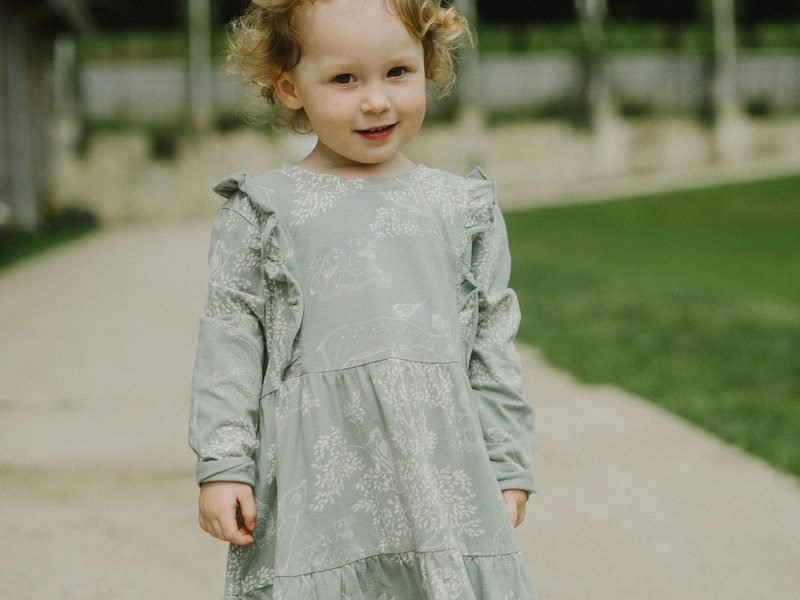
2dressn.
洋裝
複數 dresses
The dress looks good on you.這件洋裝你穿很好看。
3jacketn.
夾克；短外套
比 coat 短
Bring a jacket with you.帶件夾克在身上吧。
4jeansn.
牛仔褲
永遠複數；a pair of jeans
My dad wears jeans on weekends.我爸爸週末穿牛仔褲。
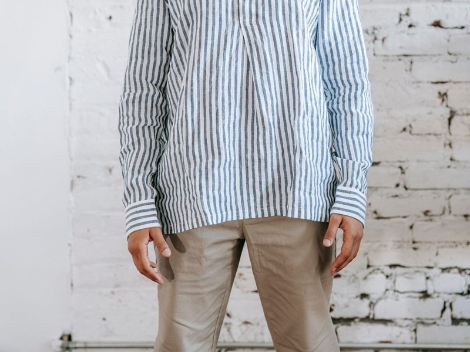
5pantsn.
長褲
永遠複數；a pair of pants
My pants are too short now.我的長褲現在太短了。
6shirtn.
襯衫
複數 shirts
You look nice in that blue shirt.你穿那件藍襯衫很好看。
7T-shirtn.
T 恤
也寫 tee
I like the picture on your T-shirt.我喜歡你 T 恤上的圖案。
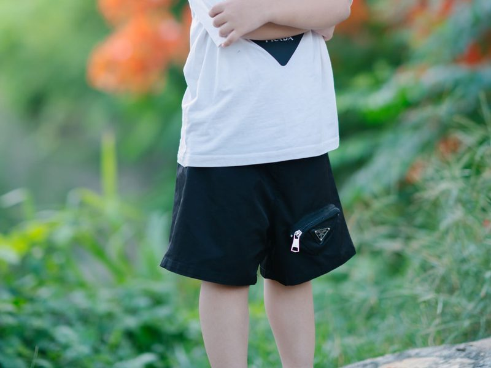
8shortsn.
短褲
永遠複數；a pair of shorts
We wear shorts in summer.我們夏天穿短褲。
9skirtn.
裙子
複數 skirts
My sister has a pink skirt.我妹妹有一件粉紅色的裙子。
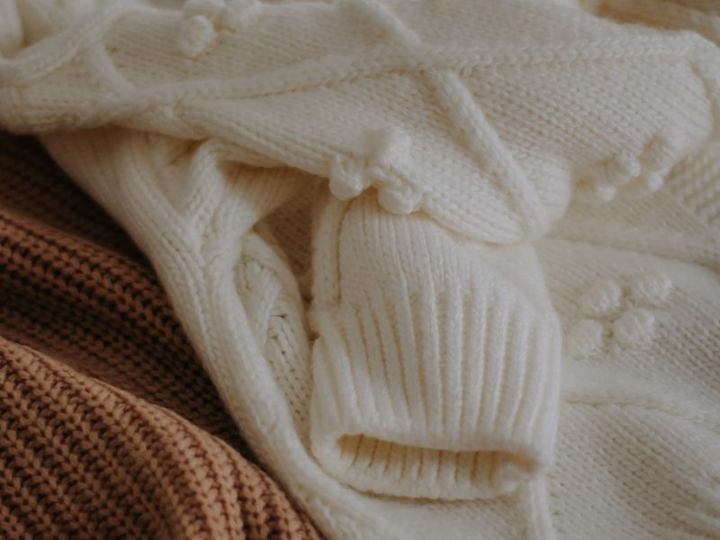
10sweatern.
毛衣
複數 sweaters
Grandma made this sweater for me.這件毛衣是奶奶為我織的。
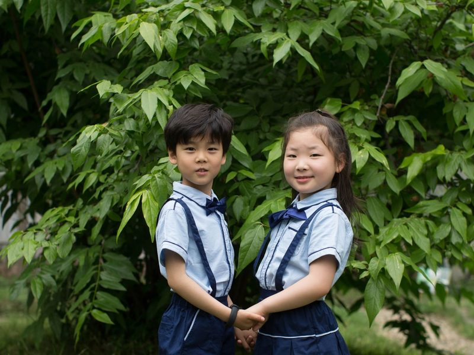
11uniformn.
制服
school uniform 校服
Junior high students in Taiwan wear uniforms.台灣的國中生穿制服。
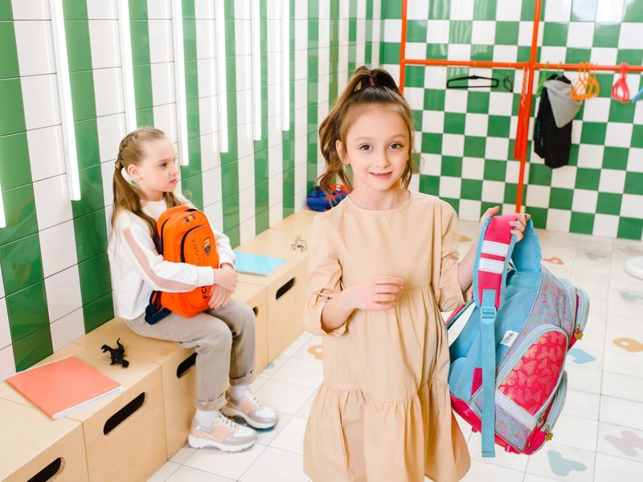
12bagn.
袋子；包包
school bag 書包
My school bag is very heavy.我的書包好重。
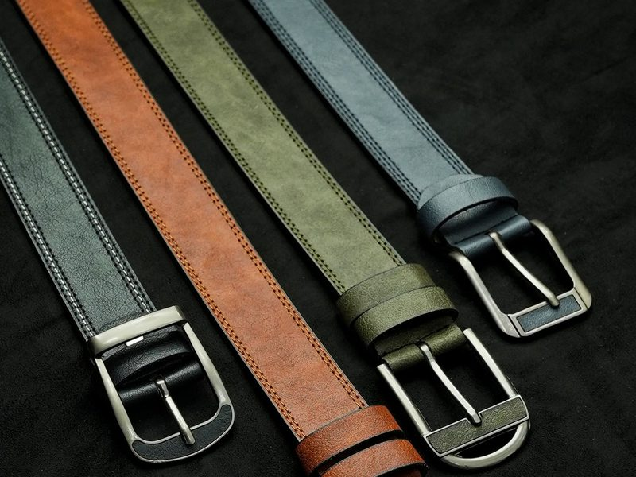
13beltn.
腰帶
seat belt 安全帶
This belt is too long for me.這條腰帶我繫太長了。
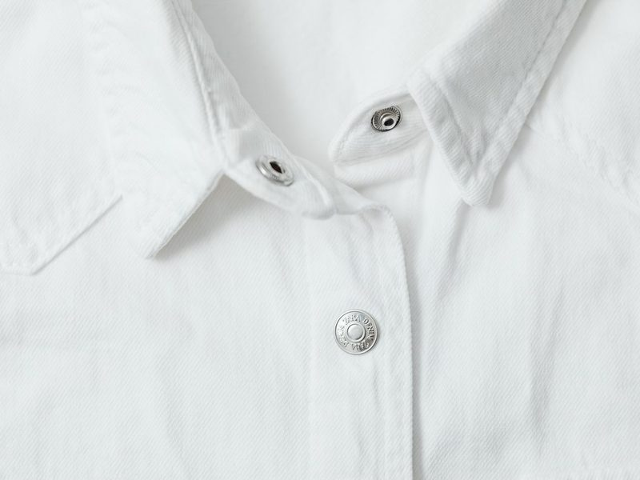
14buttonn. / v.
鈕扣；扣上
button up 扣好扣子
A button fell off my shirt.我襯衫掉了一顆扣子。
15capn.
便帽；棒球帽
有帽舌，沒有一圈帽緣
The baseball player wears a white cap.那位棒球選手戴著白色的帽子。
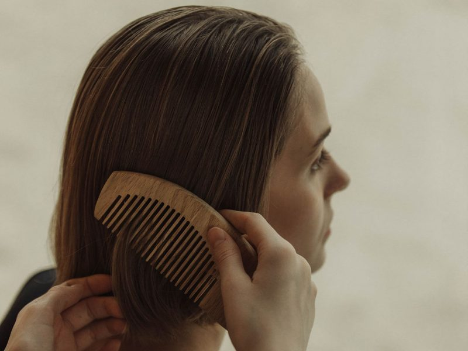
16combn. / v.
梳子；梳頭
b 不發音
I comb my hair every morning.我每天早上梳頭髮。
17gloven.
手套
常用複數 gloves；a pair of gloves
Wear gloves when you wash the dishes.洗碗時要戴手套。
18hatn.
帽子
有一圈帽緣
Wear a hat at the beach.在海邊要戴帽子。
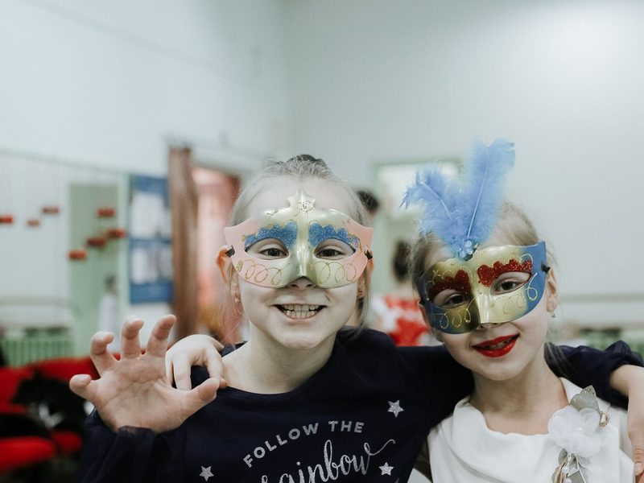
19maskn.
面具；口罩
wear a mask 戴口罩／面具
The girls wore colorful masks at the party.女孩們在派對上戴著彩色面具。
20pocketn.
口袋
pocket money 零用錢
He put his hands in his pockets.他把手插在口袋裡。
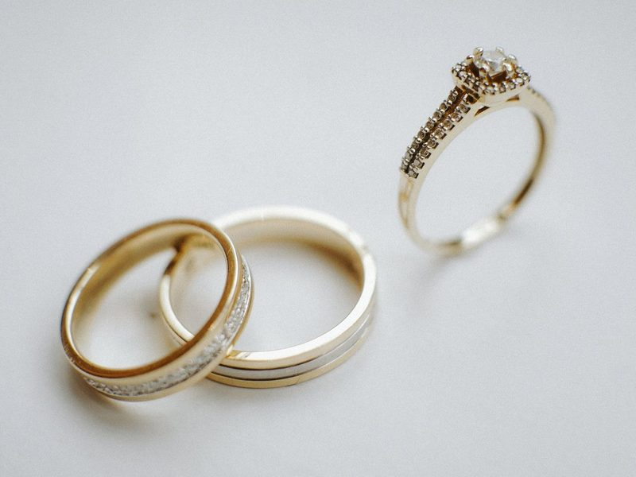
21ringn.
戒指
也有「鈴聲；響」的意思
She wears a gold ring.她戴著一枚金戒指。
22shoesn.
鞋子
a pair of shoes 一雙鞋
I need a new pair of running shoes.我需要一雙新的跑鞋。
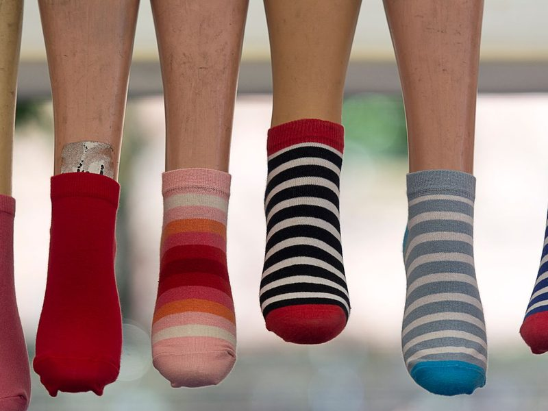
23socksn.
襪子
a pair of socks 一雙襪子
Your socks don't match!你的襪子不成對！
24tien.
領帶
也當動詞「綁」
Dad wears a tie to work.爸爸打領帶去上班。
25umbrellan.
雨傘
an umbrella（母音開頭用 an）
Don't forget your umbrella. It might rain.別忘了帶傘，可能會下雨。
26walletn.
錢包；皮夾
purse 女用錢包
I lost my wallet on the bus.我在公車上弄丟了錢包。
27clothesn.
衣服
永遠複數，沒有 a clothes
These clothes are too small for me.這些衣服我穿太小了。
28wearv.
穿；戴
wear-wore-worn
What should I wear to the party?我該穿什麼去派對？